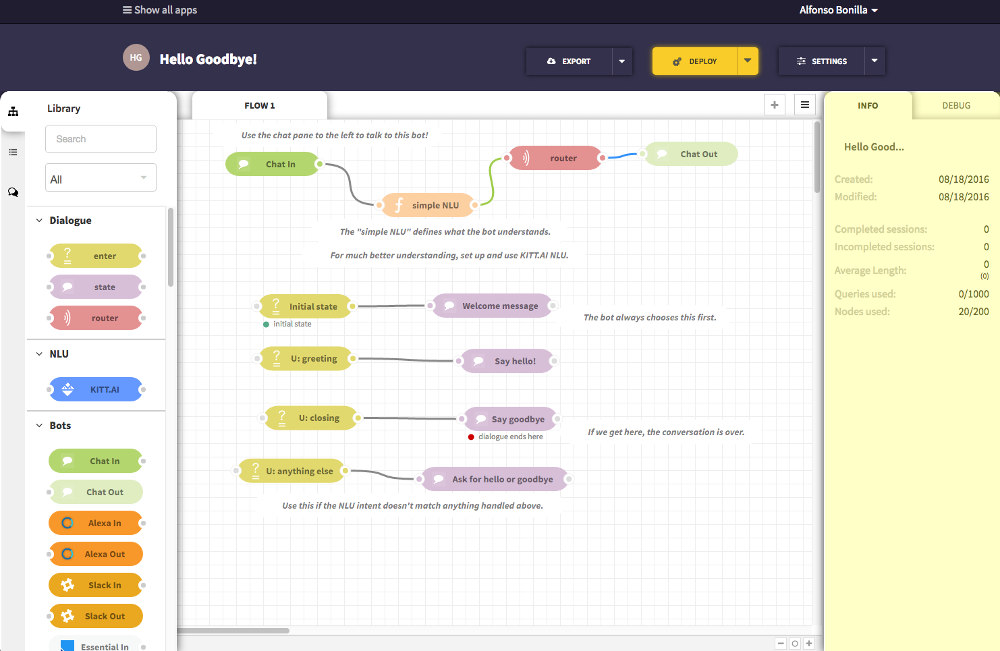

快速入门¶
登录ChatFlow¶
ChatFlow部署在 http://ChatFlow.dueros.baidu.com 域名下，目前我们兼容Chrome浏览器和Firefox浏览器。
如何登录：
- 打开 http://ChatFlow.dueros.baidu.com
- 使用Github账户或者Baidu账户登录。
从范例中创建一个新的APP¶
- 点击”Create new app”按钮来创建一个新的 app ，每一个app都对应着一个 bot 。

2. 在浮层中，Use a sample project 标题下，点击 “Hello Goodbye!” 范例项目。 页面会自动刷新，然后你就会看到ChatFlow的编辑器。
编辑器左侧是 Node列表，它包含了各种类型的node。
编辑器的主要部分是一张 画布。画布中的node会组成这个项目。
Note
当你选择示例项目的时候，画布上会自动生成一些node，如果你点击”clean project”，画布上会是空的。

编辑器右侧的 信息选项卡 提供了当前node的信息。
Tip
这里有每一种node的详细信息。
Warning
信息选项卡可能被隐藏了，点击右上角的”=”可以显示信息选项卡。


- 点击 Deploy 按钮来部署你的应用，然后你和你的用户就可以和这个bot进行交互了。

- 点击编辑器左侧的 Chat Tab，在这里你可以直接和你的bot进行对话。
5. 测试你的bot。你可以和它说“hi”, “hello”,”howdy” ,“goodbye”, “bye”, “bye bye”。它会给你回复合理的消息。 如果你说了其他的内容，它就会表示无法理解。
现在你可以正式使用ChatFlow的编辑器了！无数的bot在等待着被制作！你准备好了吗？